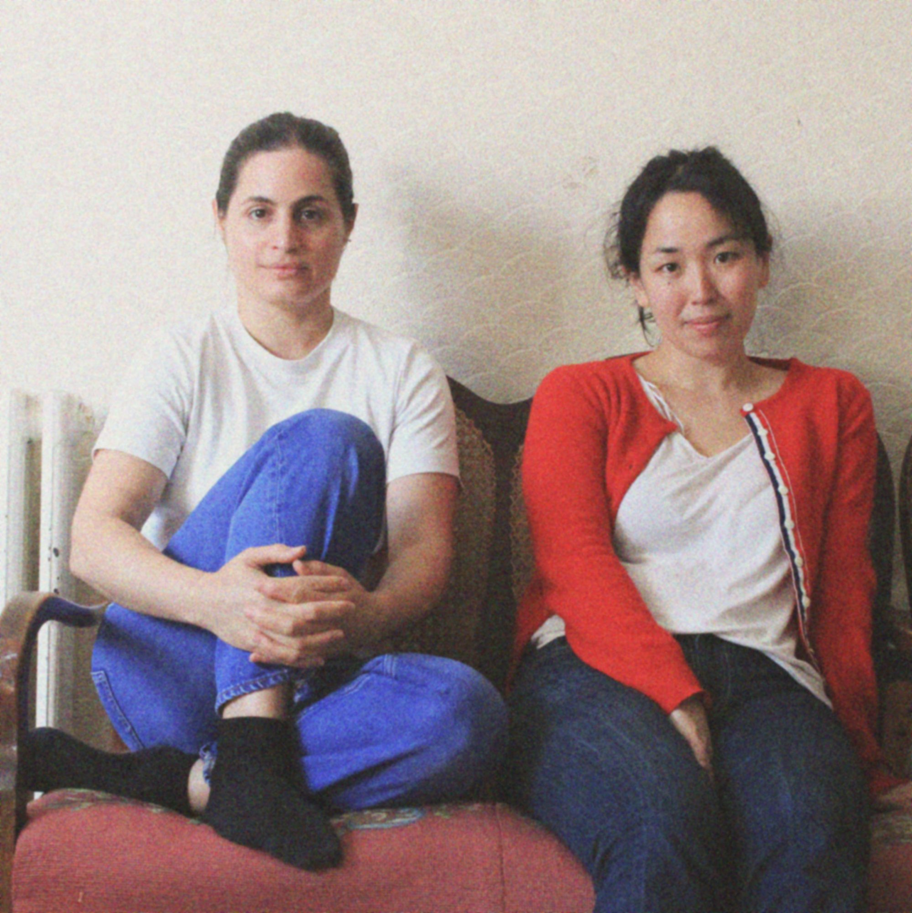

Requiem in Progress is a multidisciplinary performance duo by Ruby Antonowicz-Behnan and Yui Yamamoto exploring the multiplicity of grief as both a personal and collective condition. Responding to contemporary global crises, the project creates a reflective space in which grief and memory are not resolved or narrated, but held open as shared, embodied experiences that shape how we relate to the world and to one another.